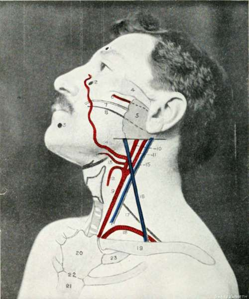

The Vessels And Nerves
Description
This section is from the book "Landmarks And Surface Markings Of The Human Body", by Louis Bathe Rawling. Also available from Amazon: Landmarks and Surface Markings of the Human Body.
The Vessels And Nerves
The carotid arteries correspond in direction to a line from the sterno-clavicular joint to the hollow (Fig. III, 9.) between the angle of the jaw and the mastoid process. The common carotid usually bifurcates at the level of the upper border of the thyroid cartilage (fourth cervical vertebra)(Fig. III, 10,11) , the external carotid subsequently lying superficial to and slightly to the inner side of the internal carotid. The omo-hyoid muscle (upper belly) crosses the common carotid at the level of the cricoid cartilage, and in this situation the artery may be compressed against the prominent anterior tubercle of the transverse process of the sixth cervical vertebra (Chassaignac's tubercle).
The superior thyroid artery arises from the external carotid in the carotid triangle, immediately above the level of the upper border of the thyroid cartilage, (Fig. III, 12.) and, turning downwards under cover of the anterior belly of the omo-hyoid muscle, is directed towards the apex of the lateral lobe of the thyroid gland.
The lingual artery arises midway between the level of the upper border of the thyroid cartilage and the great cornu of the hyoid bone, (Fig. III, 13.) and enters the submaxillary triangle by passing deep to the posterior belly of the digastric muscle. Fig. V, 7. The artery so gains the upper border of the hyoid bone, and runs inwards for a short distance parallel to that bone under cover of the hyo-glossus muscle.
The facial artery arises opposite the great cornu of the hyoid bone, and also enters the submaxillary triangle by passing deep to the posterior belly of the digastric. (Fig. III, 14.)
In this triangle the artery lies deeply embedded in the substance of the submaxillary salivary gland, and then enters on its facial course by curling round the inferior border of the lower jaw immediately anterior to the masseter muscle, about 1 1/2 inches in front of the angle of the jaw. The vessel then passes upwards towards the inner canthus of the eye, there terminating as the "angular artery."
The occipital artery arises from the outer side of the external carotid artery in the upper part of the carotid triangle, and passes upwards and backwards, under cover of the posterior belly of the digastric muscle, towards the interval between the mastoid process and the transverse process of the atlas. At the apex of the posterior triangle the artery is joined by the great occipital nerve (posterior primary division of the second cervical nerve), the two structures then passing upwards on to the vault of the skull.
The posterior auricular artery arises from the external carotid, immediately above the posterior belly of the digastric muscle, and passes backwards parallel to the upper border of that muscle, through the lower part of the parotid gland, to the depression between the cartilage of the concha of the ear and the mastoid process. Fig. IV. Here the artery is joined by the posterior auricular nerve—a branch of the facial.
Fig. III. The Side Of The Face And Neck
1. | The supra-orbital foramen. | 13. | The lingual artery. |
2. | The infra-orbital foramen. | 14. | The facial artery. |
3. | The mental foramen. | 15. | The internal jugular vein. |
4. | The zygoma. | 16. | The external jugular vein. |
5. | The parotid gland. | 17. | The upper limit of the brachial plexus |
6. | The transverse facial artery. | ||
7. | Stensen's duct. | 18. | The subclavian artery. |
8. | The facial nerve. | 19. | The clavicle. |
9. | The common carotid artery. | 20. | The manubrium sterni. |
10. | The external carotid artery. | 21. | The gladiolus sterni. |
11. | The internal carotid artery. | 22. | The angle of Ludwig. |
12. | The superior thyroid artery. | 23. | The first costal cartilage. |
Fig. IV. The Side Of The Face And Neck
1. | The inferior maxilla. | 10. | The clavicular head of the sterno-mastoid muscle. |
2. | The inferior dental nerve. | ||
3. | The tonsil. | 11. | The sternal head of the sternomastoid muscle. |
4. | The transverse process of the atlas. | ||
12. | The digastric muscle. | ||
5. | The spinal accessory nerve. | 13. | The omohyoid muscle. |
6. | The sterno-mastoid muscle. | 14. | The trapezius muscle. |
7. | The upper limit of the brachial plexus. | 15. | The posterior triangle. |
16. | The carotid triangle. | ||
8. | The third part of the subclavian artery. | 17. | The submaxillary triangle. |
18. | The subclavian triangle. | ||
9. | The clavicle. | 19. | The muscular triangle. |
To face Fig. III., pp. 14, 15.
The superficial temporal artery arises in the substance of the parotid gland as one of the two terminal branches of the external carotid. It crosses the base of the zygomatic process of the temporal bone, immediately in front of the tragus of the ear, and is accompanied by the auriculo-temporal nerve, a sensory branch of the third division of the fifth cranial nerve.
The subclavian artery (cervical course) is represented by (Fig. III, 18.) a curved line from the sterno-clavicular joint (Fig. IV, 8.) to the mid-point of the corresponding clavicle, the convexity of the line extending upwards into the supraclavicular fossa about 3/4 to 1 inch above the clavicle. In marking out this vessel, the shoulders should be well depressed.
The artery passes behind the scalenus anterior muscle, the second part of the artery being covered by that muscle. The outer border of the scalene muscle usually corresponds to the outer border of the sterno-mastoid muscle, and consequently the third part of the subclavian artery is represented by that part of the curve which (Fig. IV, 8.) lies between the outer border of the sterno-mastoid muscle and the mid-point of the clavicle.
The subclavian artery ends anatomically at the outer border of the first rib.
The external jugular vein is formed just behind the angle of the jaw by the junction of the posterior division of the temporo-maxillary trunk with the posterior auricular vein.
The vessel so formed passes downwards and backwards, superficial to the sterno-mastoid muscle, (Fig. III, 16.) towards the middle of the clavicle, above which bone the vein pierces the deep fascia to join the subclavian vein.
The internal jugular vein runs parallel and external to the internal and common carotid arteries, and (Fig. III, 15.) therefore presents a similar surface marking to that already given for those arteries.
The vagus nerve passes downwards in the carotid sheath, behind and between the carotid arteries and the internal jugular vein.
The cervical sympathetic trunk also lies in the line of the carotid arteries, being placed behind the carotid sheath. The superior cervical ganglion is situated in front of the transverse processes of the second and third cervical vertebrae; the middle ganglion overlies the corresponding process of the sixth vertebra; whilst the inferior ganglion, which is frequently fused with the first thoracic, lies behind the first part of the subclavian artery, between the transverse process of the seventh cervical vertebra and the neck of the first rib.
The phrenic nerve is formed below the level of the hyoid bone Fig. IV, (un-numbered between 10 and 11). by branches from the anterior primary divisions of the third, fourth and fifth cervical nerves, and passes downwards and slightly inwards towards the sternal end of the clavicle. At the level of the cricoid cartilage the nerve lies midway between the anterior and posterior borders of the sterno-mastoid muscle.
The spinal accessory nerve crosses the transverse process of the atlas, a bony prominence to be felt immediately below and in front of the apex of the mastoid process.
The nerve enters the substance of the sterno-mastoid (Fig. IV, 4, 5) at the junction of the upper and second quarters along the anterior border of the muscle, emerging from the posterior border of the muscle at the junction of the upper and middle thirds. The point of emergence is, however, subject to some variation, and the nerve may enter the posterior triangle of the neck at a somewhat lower level, pursuing subsequently a downward and backward course towards the anterior border of the trapezius muscle, beneath which muscle it sinks.*
Continue to: